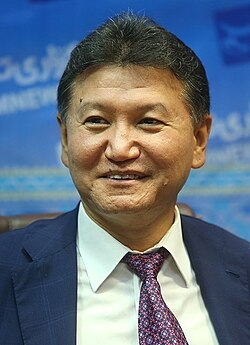

Kirsan Ilyumzhinov
President of Kalmykia, 1993 to 2010

The first president of the Russian republic of Kalmykia, from 1993 to 2010, and for years president of FIDE, the world chess federation. 1
He says that in September 1997 aliens took him from his Moscow apartment aboard their ship, while aides searched for him. When he repeated the story on Russian television in 2010, a member of parliament asked President Medvedev to find out whether he had disclosed state secrets. 1,2
Open in the interactive Watcher
Related
- A head of state's abduction story His 1997 abduction story
- Aliens took the president of Kalmykia aboard their ship Claim
Sources
- Kirsan Ilyumzhinov Wikipedia
- Russian Governor Claims He Was Abducted by Aliens Fox News, May 2010